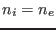
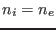
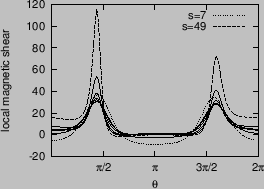

Next: Numerical results of MHD Up: Numerical results for EAST Previous: Numerical results for EAST
The tokamak equilibrium used in this paper is reconstructed by EFIT code by using the information of profiles measured in EAST experiment[9]. The shape of flux surfaces within the last-closed-flux surface (LCFS) are plotted in Fig. 11, where curves are also plotted. In the paper, I said that the equilibrium was a double-null configuration with the LCFS connected to the lower X point. This is wrong. The configuration with the LCFS connected to the lower X point should be called lower single null configuration. The double-null configuration is a configuration with LCFS connected to both the lower and upper X points. In practice, if the spacial seperation between the flux surface connected to the low X point and the flux surface connected to the upper X point, , is smaller than a value (e.g. 1cm), the configuration can be considered as a double null configuration, where is the spacial separation between the two flux surfaces on the low-field side of the midplane.
The profiles of safety factor, pressure, and electron number density are plotted in Fig. 12.
The mass density  is calculated from
, where
is the mass of the main ions (deuterium ions in this discharge), is the
number density of the ions, which is inferred from by using the neutral
condition  (impurity ions are neglected).
is calculated from
, where
is the mass of the main ions (deuterium ions in this discharge), is the
number density of the ions, which is inferred from by using the neutral
condition  (impurity ions are neglected).
|  |
yj 2015-09-04